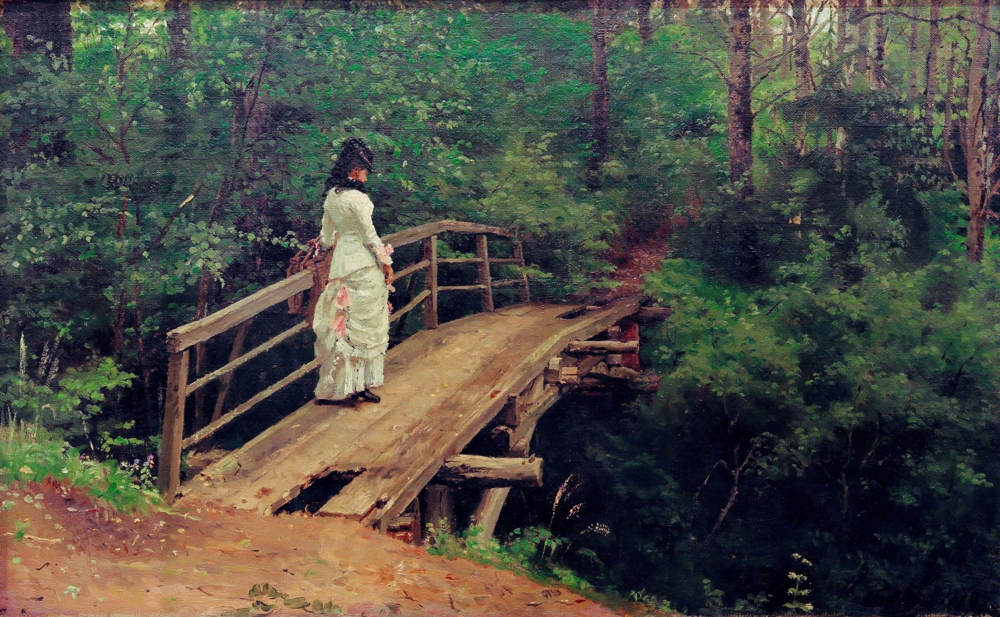

Илья Ефимович Репин
Летний пейзаж (В.А.Репина на мостике в Абрамцеве), 1879

Холст, масло, 37,5 x 61 см
Отдел личных коллекций, ГМИИ им. А.С. Пушкина, Москва.
Поступила в 1986 г., дар И.С. Зильберштейна Ранее собрание И.С. Зильберштейна, Москва Р.Е. Ратнера, Ленинград В.А. Репиной, Петербург–Петроград.
«Летний пейзаж» был написан художником в 1879 году. Нужно сказать, что природу подмосковного Абрамцева живописцы изображали довольно часто, однако из-под кисти Репина вышла трогательная и лиричная картина, на которой ему удалось гармонично объединить человека и природу. На полотне изображён заброшенный парк в летний день. Старые деревья на заднем плане образуют густые заросли, кажется, что это не парк, а густая дикая чаща. В центре композиции изображён старый мостик, на котором не хватает одной доски. Однако наше внимание приковывает не он, а женщина в белом длинном платье, которая стоит на мосту и наслаждается нетронутой красотой этого места. На первый взгляд картина может показаться мрачной, так как при её создании использовано много тёмных оттенков. Однако на полотне присутствует внутренний свет и за счёт этого вся картина как будто светится изнутри. И мы видим, что перед нами не лесная чаща, а заросший парк. Сквозь ветви деревьев пробиваются лучи солнца, и за счёт этого фигура женщины окутывается сиянием, а её платье из белого превращается в золотистое и как бы светится изнутри. Художнику удалось настолько реалистично передать детали, что можно различить листики на деревьях и каждую дощечку на мостике. Чувствуется прохладная глубина оврага, через который перекинут мост. Прописанные с поразительной точностью складки на женском платье дополняют грациозную фигуру. Женщина стоит к нам спиной, но можно понять, что она молода и жизнерадостна. Она гуляет по парку, наслаждаясь нетронутой природой, гармонично сливаясь с ней. Что может быть лучше тёплого летнего дня! Эта картина, как и другие пейзажи, созданные Репиным, отражает главную мысль художника. У каждого человека должен быть свой любимый уголок природы, где можно отдохнуть от суеты, посидеть в тишине и поразмышлять.
Источник: https://collection.pushkinmuseum.art/entity/OBJECT/95560